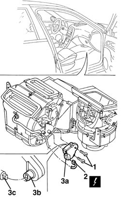
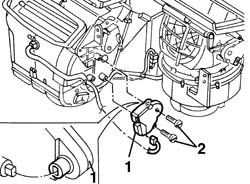
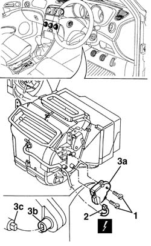
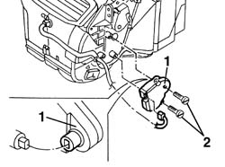

5040D77 air conditioner mixer flap control motor - r r
- Path
- Procedures > 50 AUXILIARY UNITS > 5040 AIR CONDITIONING CASING AND COMPONENTS > 5040D air conditioner controls > 5040D77 air conditioner mixer flap control motor - r r
- Kind
- repair procedure (removal / refitting; the operation number is the code)
- Applies to
- all engines; all production periods
- Interactive page
- https://sloeber94.github.io/elrnDB-a156/en/#/3238350
Applies to: all engines; all production periods; only with equipment: Air Conditioner
 Removing
Removing
 Refitting
Refitting7040G24 switch for facia compartment light - r+r
7040G20 facia compartment light bulb holder - r+r
7040A14 flap of glove compartment trim element (one) - arrange
1. Unscrew the screws.
2. Disconnect the electrical connection.
 | Name | Connector |
|---|---|---|
2 | Air mixing actuator |
3. Remove the motor (3a) releasing the outlet shaft (3b) from the flap driving pin (3c).

Applies to: all engines; all production periods; only with equipment: Air Conditioner
Refitting
RemovingCheck that the motor is not damaged.
1. Position the motor.
To make easier the motor shaft connection, reconnect the electrical connection and rotate the motor by operating the control on the dashboard, until the lining up with the flap pin.
2. Screw the screws.

Applies to: all engines; all production periods; only with equipment: Air Conditioner
7040A14 flap of glove compartment trim element (one) - arrange
Applies to: all engines; all production periods; only with equipment: Right hand drive and Air Conditioner
Removing
Refitting7045A10 l/h or r/h front seat (one) - r+r (driver's side).
1. Undo the bolts.
2. Disconnect the electrical connection.
| Name | Connector |
|---|---|---|
2 | Air mixing actuator |
Remove motor (3a) by releasing outlet shaft (3b) from the operating pin of flap (3c).

Applies to: all engines; all production periods; only with equipment: Right hand drive and Air Conditioner
Refitting
RemovingCheck that the motor is undamaged.
1. Position the motor.
2. Tighten the bolts.

Applies to: all engines; all production periods; only with equipment: Right hand drive and Air Conditioner
7045A10 l/h or r/h front seat (one) - r+r (driver's side).
Topics linked from this page (6)
- 7040A14 flap of glove compartment trim element (one) - arrange
- 7040A31 flap assembly - r r
- 7040G20 facia compartment light bulb holder - r+r
- 7040G24 switch for facia compartment light - r+r
- 7045A10 l/h or r/h front seat (one) - r+r
- N81 Air mixing actuator